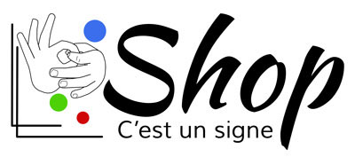

Site de la boutique en ligne pour l'association C'est un signe
Publié le 20 juillet 2017
Wordpress



Je travaillais en tant que responsable e-commerce chez l’association C’est un signe à but non lucratif à pour promouvoir la culture sourde, par biais de la Langue des signes et de protéger l'enfant (Sourd, malentendant, et entendant) dans son intégrité physique, cognitive et émotionnelle. J’ai créé un sous-site du vente en ligne avec Wordpress avec le template simplifié. J’étais très fier de réaliser ce travail magnifique.
Je quittais l’association en 2017, car je n’étais plus convaincu pour les nouveaux objectifs du comité de l’association et je n’avais pas bénéficié la valeur de mon travail.
- Lien obsolète : shop.cestunsigne.ch
- Client : Arielle de Sadeleer, la présidente de l'association
- Création du site : 2016
- Système du site : Wordpress
- Association clôturée : Suite à la décision de l'assemblée générale et du comité, il a été décidé que l'association serait clôturée au 31 décembre 2023.